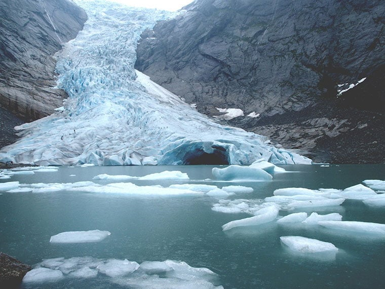
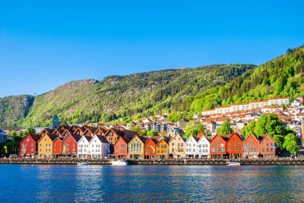
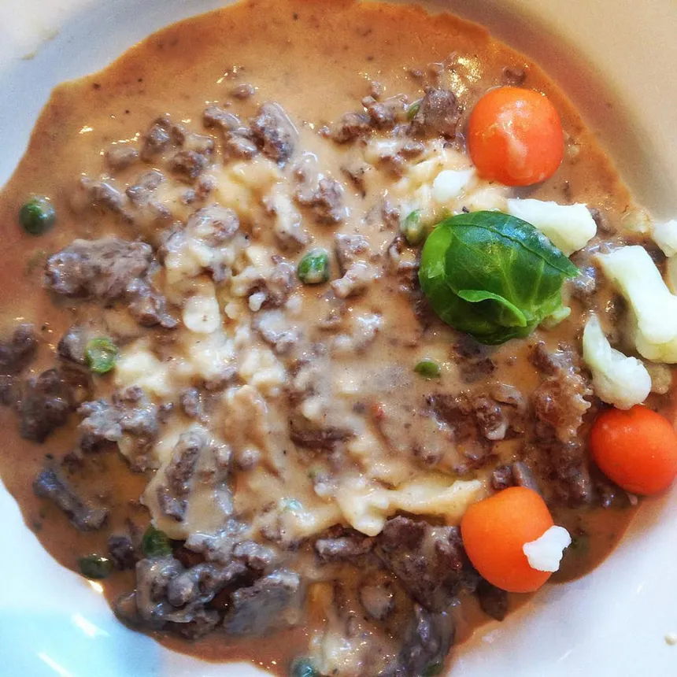
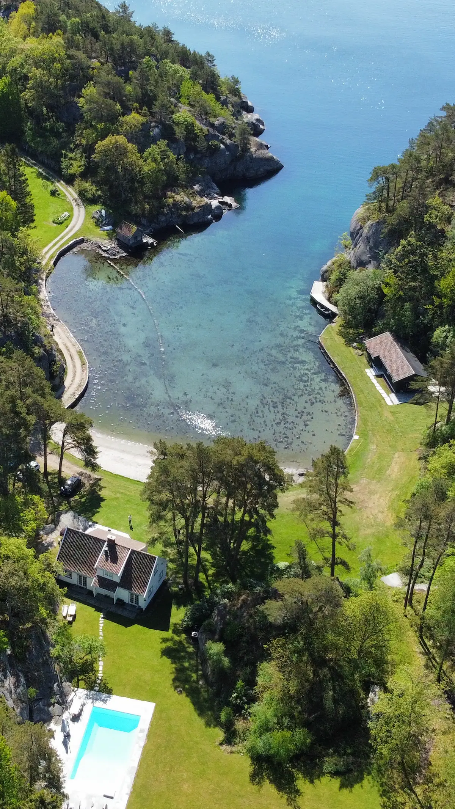
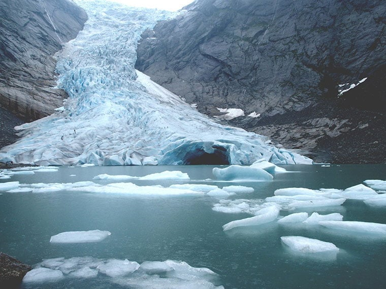
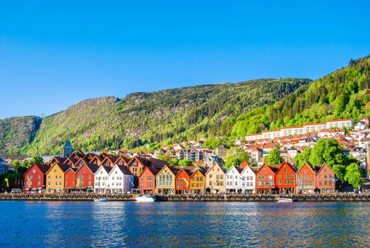
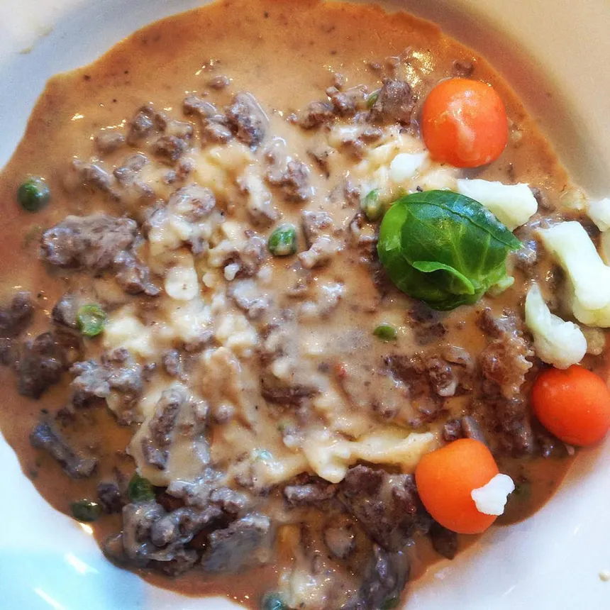
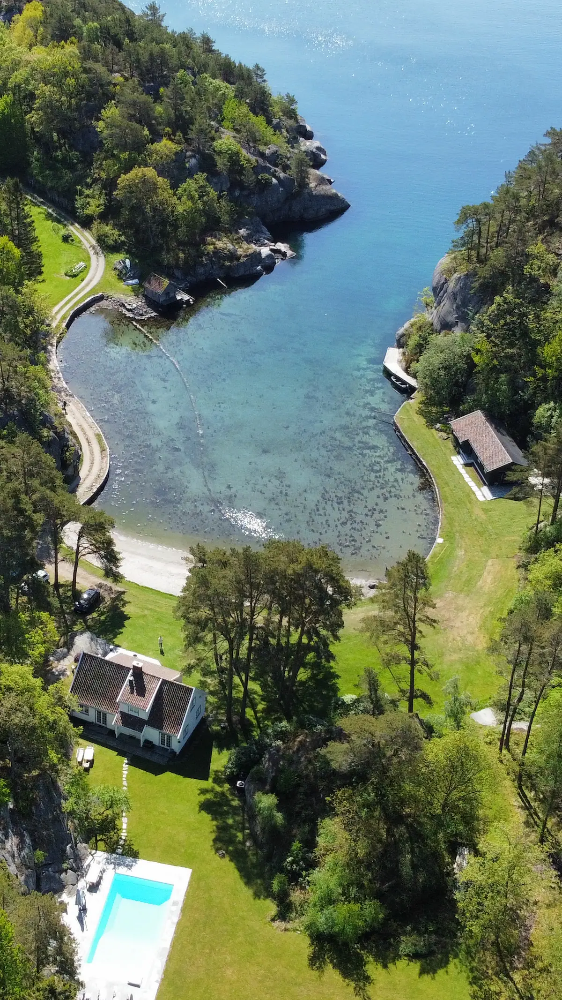

Norway
Activities
- Nature:
- Cruising, kayaking, and swimming in the fjords.
- Hiking - popular hikes include Trolltunga, Gaustatoppen, Besseggen Ridge, HM Queen Sonja's trail, and Aurlandsdalen. Trolltunga can be a backpacking destination.
- Northern Lights under the right fall/winter evening conditions.
- Glaciers
- More info on fjord cruise trips here.
- Other Sights:
- West Norwegian Fjords (also Nature) - World Heritage Cites (UNESCO)
- Oslo
- Bryggen, Bergen
- Tromso and Arctic Circle
- Viking Ship Museum
Food
- Seafood, deer, elk, and sheep/lamb. I hear Finnbiff and other stews are delicious.
- Maaemo, #47 on The World's 50 Best Restaurants (Michelen 3-star)
- Cheese
Lodging
- Hotels - options include luxury, fjord, and ice hotels 👀
- Cottages and cabins
- AirBnBs also available
Transit
- Train
- Boat
- Road
- Series of small airports
Cost
- Flight (from SFO to Oslo): $800-$1300 roundtrip, 1 layover ~2-3 hours. Alternatively, can fly into Tromso.
- Lodging:
- Cabin for 10 days: $2750
- Hotels ~$120-$180/night.
- AirBnB 10 people 10 days: $3000-$5000 total, or $300-$500/person
- Transit
- Public Transportation - daily pass ~$5/day, weekly pass ~$18/week
- Oslo's Ruter Transit Network: Oslo Pass = unlimited travel + museum access for 10 days for ~$58
- Long-distance Train: ~$30 for a 2-hour ride
- Total (est. range): $1300 - $2200. Depends on how many passes, lodging options selected, etc. Does not include food.
 






